Cape to Cape Track
Two capes, two oceans and Margaret River's wild surf coast.
Cape to Cape Track crosses Australia for 123 km and ends at Cape Leeuwin. The first landmark is Cape Naturaliste Lighthouse. At 5,000 steps a day it's about 5 weeks of the walking you do anyway. All 16 landmarks are below, in walking order, with a photograph and the story of the place.
- 123km end to end
- 16landmarks
- 5 weeksat 5,000 steps a day
- Cape Leeuwinfinishes at

The landmarks of Cape to Cape Track
16 landmarks, in walking order. Each photograph is by the person credited beneath it, used as they licensed it.
-
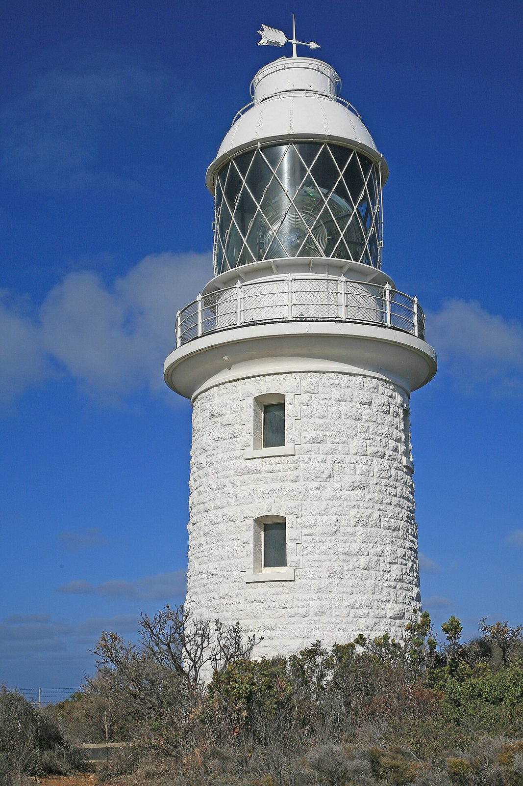
Photo: W. Bulach · Wikimedia Commons, CC BY-SA 4.0 Cape Naturaliste Lighthouse
Two oceans, two capes, some one hundred and twenty kilometres between them — and it all begins beneath a stout limestone tower first lit in 1904. Geographe Bay glitters to the east; the track turns south along the Leeuwin-Naturaliste Ridge. Offshore, humpbacks pass on the swell, and the coast runs unbroken toward distant Cape Leeuwin.
-
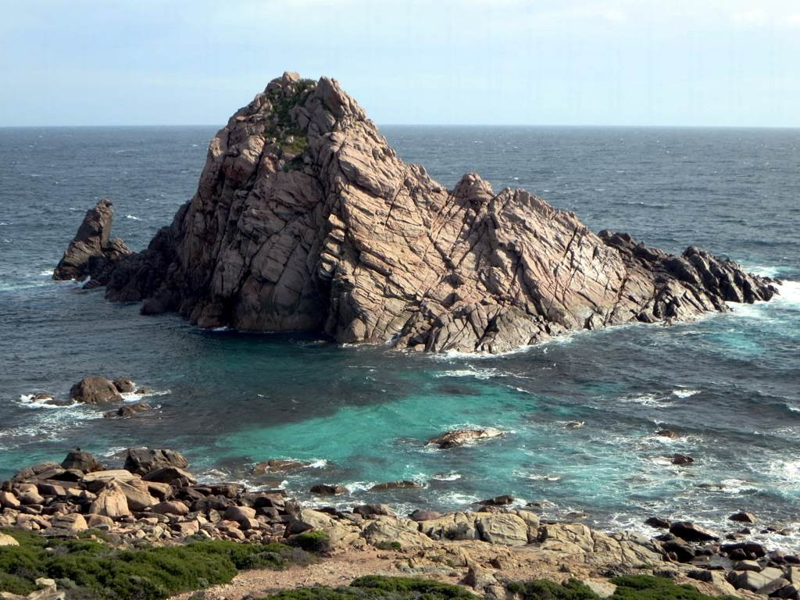
Photo: D-Stanley · Flickr via Openverse, CC BY 2.0 Sugarloaf Rock
Around the first headland the granite erupts straight from the sea — Sugarloaf Rock, a dark monolith ringed by white water. Red-tailed tropicbirds wheel above it, this being one of their few southern nesting sites. Spray hangs in the air. The walk is barely begun, yet already the coast is showing off.
-
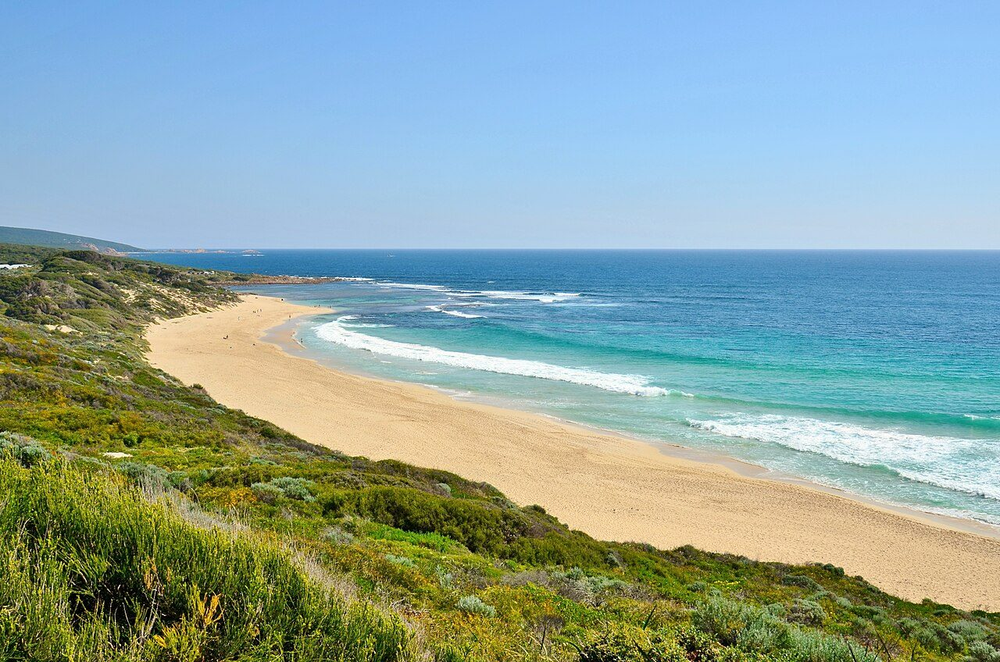
Photo: Bahnfrend · Wikimedia Commons, CC BY-SA 4.0 Yallingup Beach
Surfers dot the reef break at Yallingup, a Wardandi word often translated as 'place of love'. Inland lies Ngilgi Cave, its shawls and stalactites drawing visitors since 1900 — Western Australia's first tourist cave. Beyond the beach, the clifftop heath resumes, carrying the track south along the exposed coast.
-
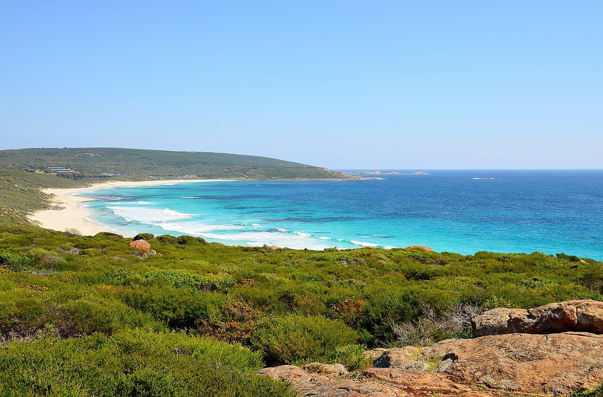
Photo: Bahnfrend · Wikimedia Commons, CC BY-SA 4.0 Smiths Beach
White sand runs unbroken at Smiths Beach, framed by low dunes and the constant roar of the Indian Ocean. The afternoon sea breeze known across the southwest as the Fremantle Doctor arrives on cue, ruffling the dune grass. Past the sand, the coastal track climbs back onto the clifftops and continues south.
-
Quinninup Falls
A freshwater surprise waits just back from the beach: Quinninup Falls, spilling over a rock ledge and running strongest after the winter rains. Come summer it can slow to a trickle. Peppermint trees shade the little pool below. It makes a fine spot to rest tired legs before the long clifftop miles ahead.
-
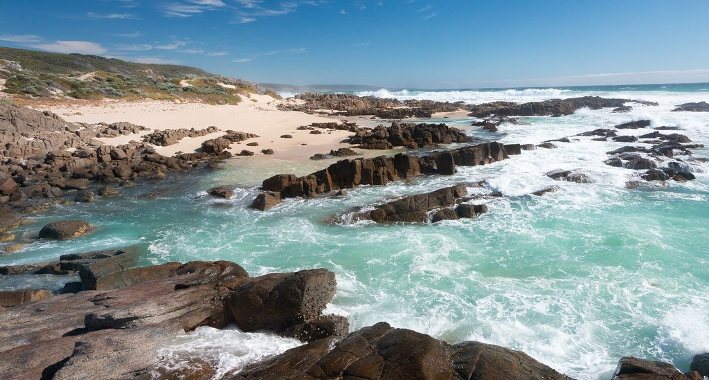
Photo: Mr Moss · Flickr via Openverse, CC BY 2.0 Moses Rock
Down a rough four-wheel-drive track the coast opens at Moses Rock, all tumbled granite and surging channels. Anglers pick their way across the platforms chasing herring. In a big swell the reef is unforgiving, and the walking route holds to the high line above the wash, salt drying white on the rock.
-
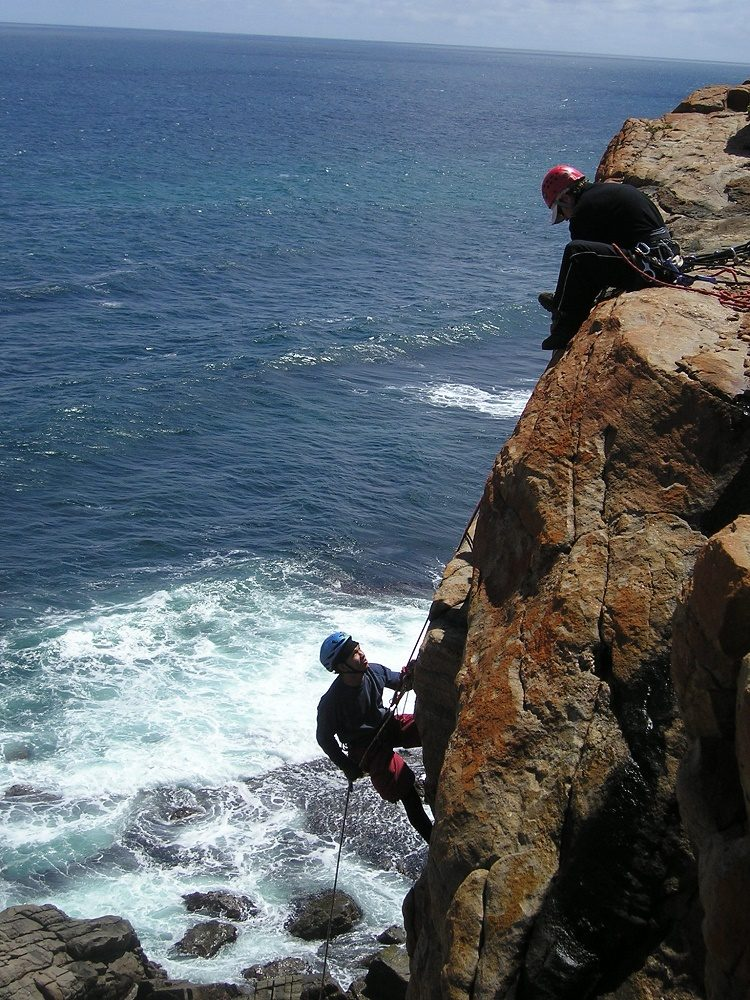
Photo: Firstac5 · Wikimedia Commons, CC BY-SA 4.0 Wilyabrup Sea Cliffs
The land rears up in sheer granite walls — the Wilyabrup sea cliffs, the best-known climbing crag on this coast, their faces streaked with old chalk. Far below, waves detonate against the base. The track traces the cliff edge, the sheer drop concentrating every footstep along the exposed rim.
-
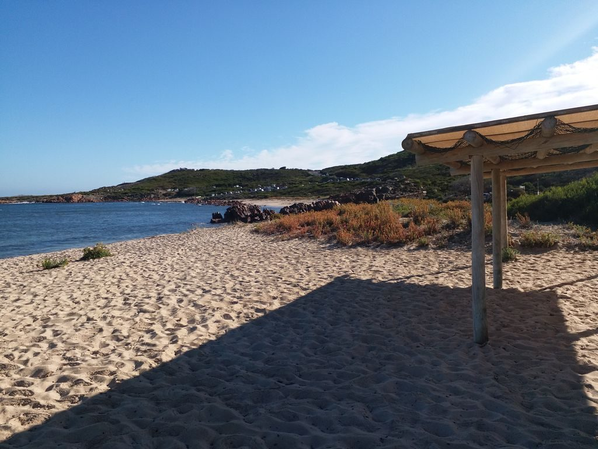
Photo: sydneystalley · Mapillary, CC BY-SA 4.0 Gracetown (Cowaramup Bay)
Sheltered Cowaramup Bay finally offers a lee, and the hamlet of Gracetown tucks into its northern arm — holiday shacks, a small store, boats swinging on their moorings. Roughly the track's halfway point, it makes a natural resupply. Whales sometimes loll in the calm water offshore between June and September.
-
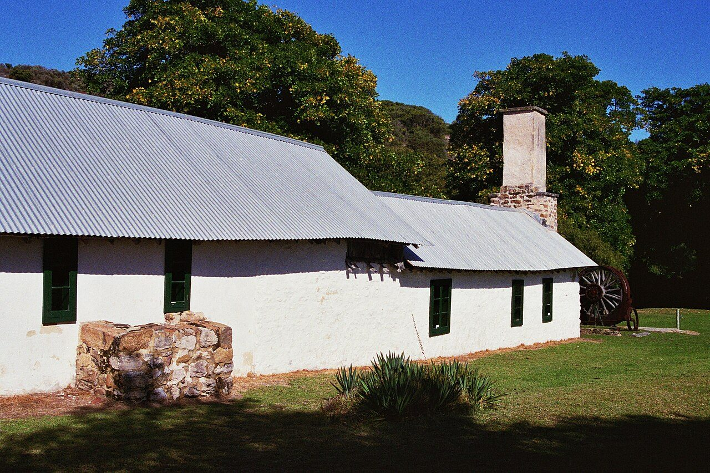
Photo: Calistemon · Wikimedia Commons, CC BY-SA 4.0 Ellensbrook
Set back among the peppermints stands Ellensbrook, a homestead built in the 1850s by Alfred and Ellen Bussell on Wardandi Country — a place of layered and difficult history. Nearby, Meekadarabee Falls slides down a mossy grotto, its cool green shade a sharp contrast to the wind and glare of the open coast.
-
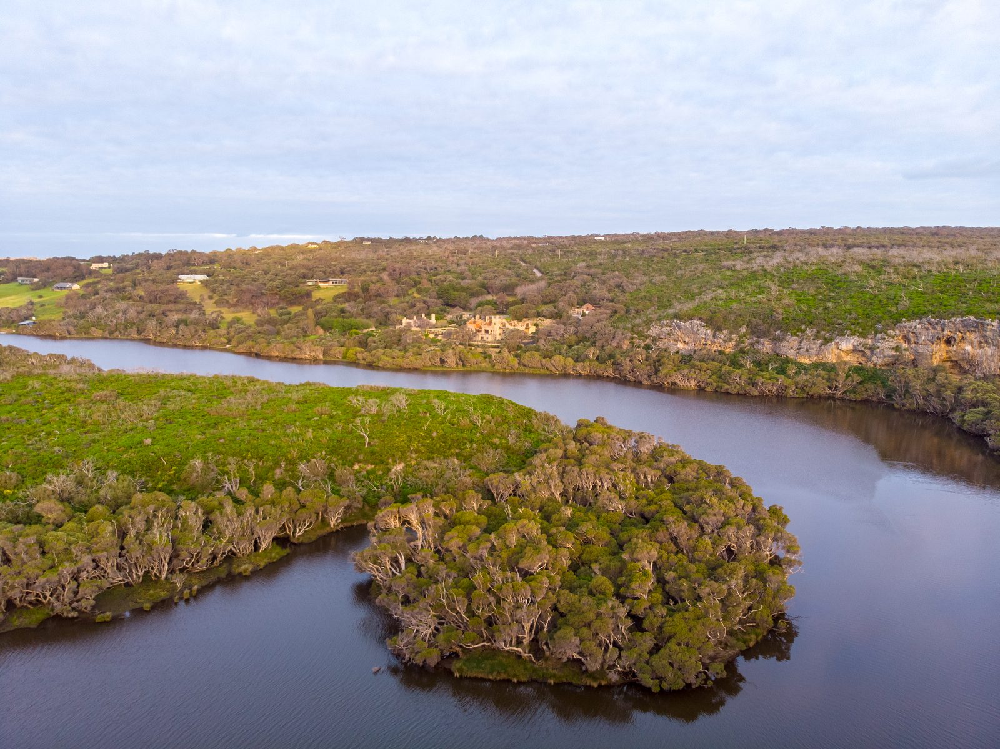
Photo: Hollett.rb · Wikipedia, CC BY-SA 4.0 Margaret River Mouth (Prevelly)
The Margaret River meets the sea at last, with Prevelly rising on the hill above the rivermouth. Just south lies Surfers Point, where the world's best chase the Margaret River Pro each autumn. The town was named by an Australian veteran for the Cretan monastery that sheltered him in wartime, and the track crosses the river here to continue south.
-
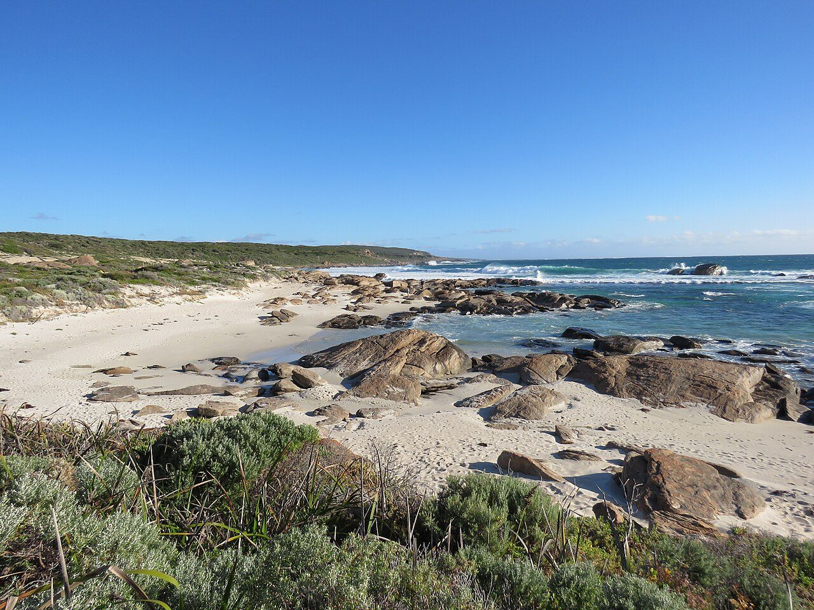
Photo: Calistemon · Wikimedia Commons, CC BY-SA 4.0 Redgate Beach
Rust-red granite boulders glow warm against the pale sand at Redgate Beach. Offshore in 1876 the steamer Georgette foundered nearby, and stockman Sam Isaacs and sixteen-year-old Grace Bussell rode their horses into the surf to haul roughly fifty survivors ashore. Beyond the beach the track turns inland toward the karri forest.
-
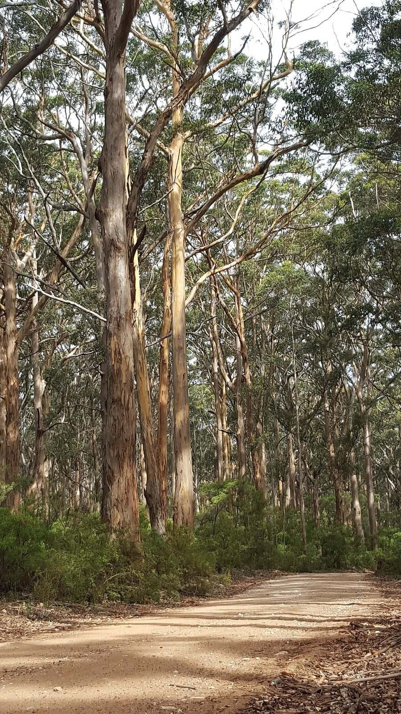
Photo: Boyup · Wikimedia Commons, CC BY-SA 4.0 Boranup Karri Forest
The coast falls away and towering karri close in overhead — Boranup, a forest of pale-trunked giants that regrew after the timber mills fell silent a century ago. Light filters through, green and cool. Footfalls fall quiet on the leaf litter, the ocean reduced to a distant hush somewhere beyond the trees.
-
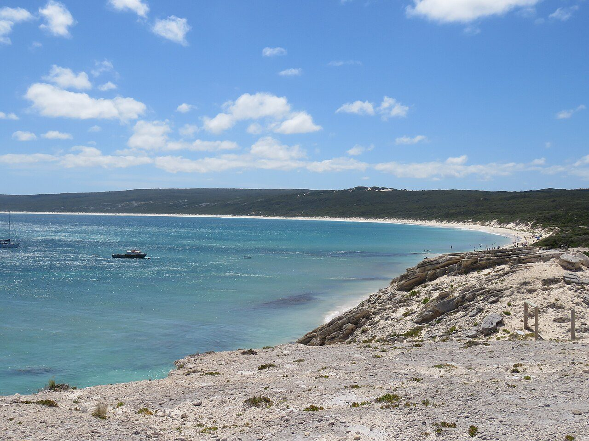
Photo: Calistemon · Wikimedia Commons, CC BY-SA 4.0 Hamelin Bay
At Hamelin Bay the water turns turquoise and calm, and enormous smooth stingrays glide into the shallows, drawn in since the old fishing-jetty days. Weathered pylons still stand offshore, and inland lies Jewel Cave, the largest of the region's show caves. Beyond the bay the track climbs back toward the exposed southern coast.
-
Cosy Corner
A modest campground marks Cosy Corner, tucked behind the last dunes before the final cape. Fishers cast into the gutters at dusk, and the Southern Ocean's mood turns noticeably wilder this far south. The wind carries a colder edge here, and Cape Leeuwin lighthouse now stands little more than a day's walk away.
-
Deepdene
Through low coastal scrub the track threads past Deepdene, its beach strewn with weathered granite and heaped ropes of kelp. The two oceans are converging now, and the swell arrives from odd angles, confused and heavy. Here the continent narrows steadily toward its southwestern point at Cape Leeuwin.
-
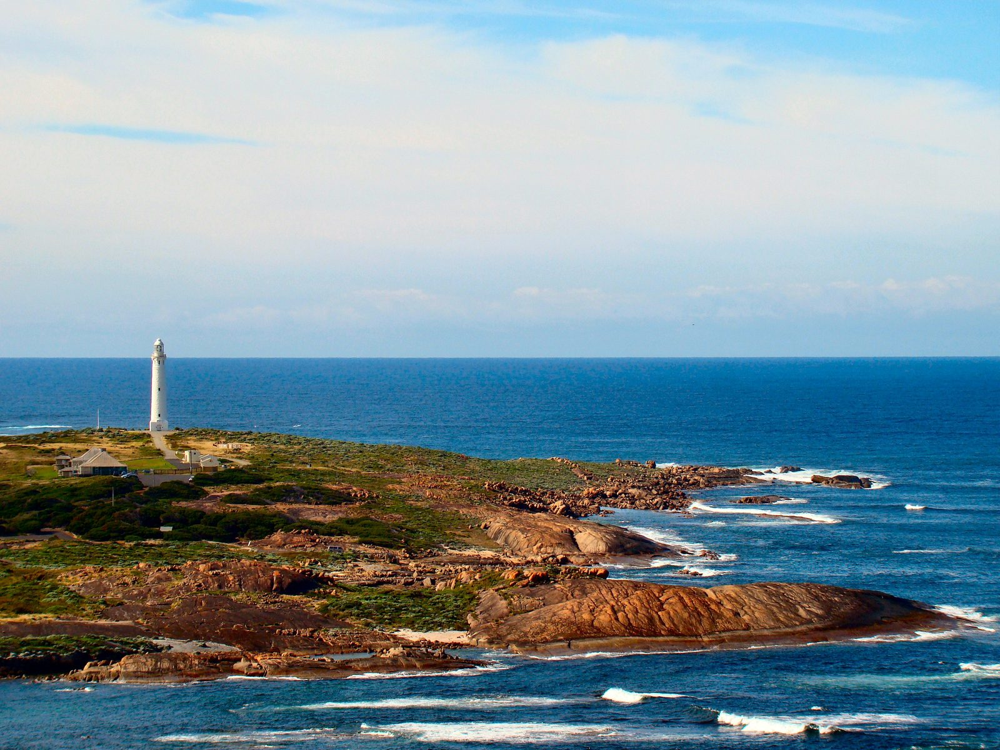
Photo: Bjørn Christian Tørrissen · Wikipedia, CC BY-SA 3.0 Cape Leeuwin Lighthouse
Land simply runs out. At Cape Leeuwin the Indian and Southern Oceans meet in a churning line, and above them stands the tallest lighthouse on mainland Australia — thirty-nine metres of limestone, first lit in 1896. Below it, an old freshwater waterwheel has slowly calcified to stone. Cape to cape, two lights and two seas mark the ends of one long coast, and here, at the continent's southwestern corner, the track runs out with the land.
Walking the Cape to Cape Track
Your watch is already counting these steps. Watch Walks spends them on the Cape to Cape Track, all 123 km of it, and hands you each landmark as you reach it. There's no route recording, no account and no ads. The Inca Trail is free; this one is a one-time purchase with no subscription.
Other trails in Oceania
- Te Araroa 3,000 km · New Zealand
- Bibbulmun Track 1,000 km · Australia
- Larapinta Trail 223 km · Australia (NT)
- Australian Alps Walking Track 655 km · Australia (VIC/NSW/ACT)
- Routeburn Track 32 km · New Zealand
- Overland Track 65 km · Australia (Tasmania)